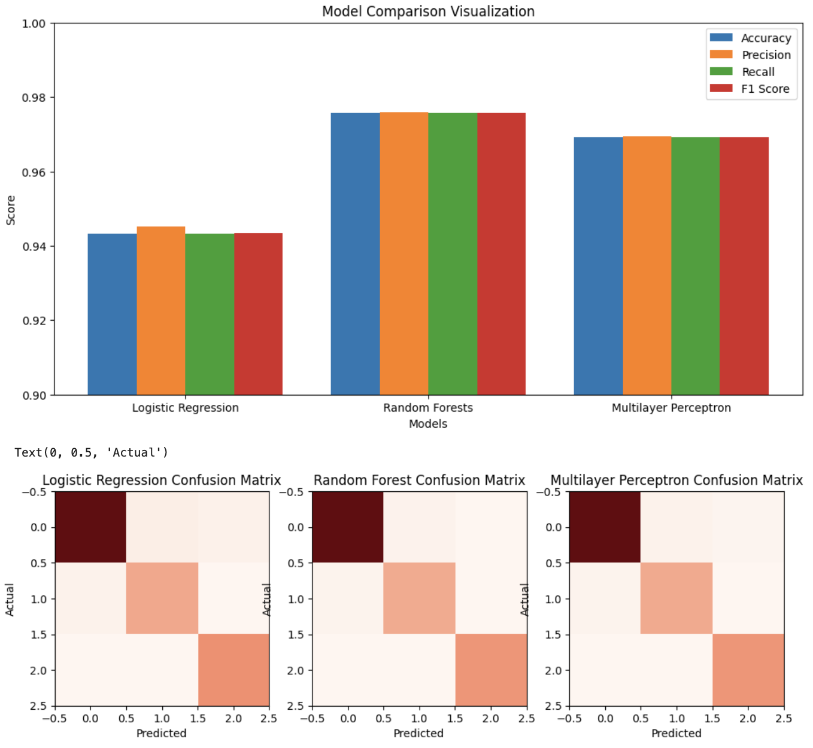
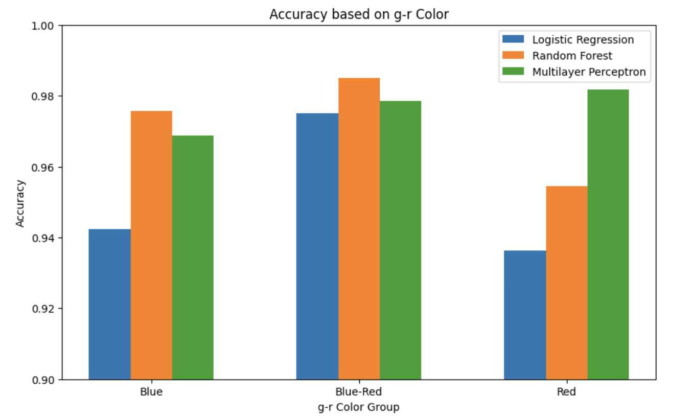
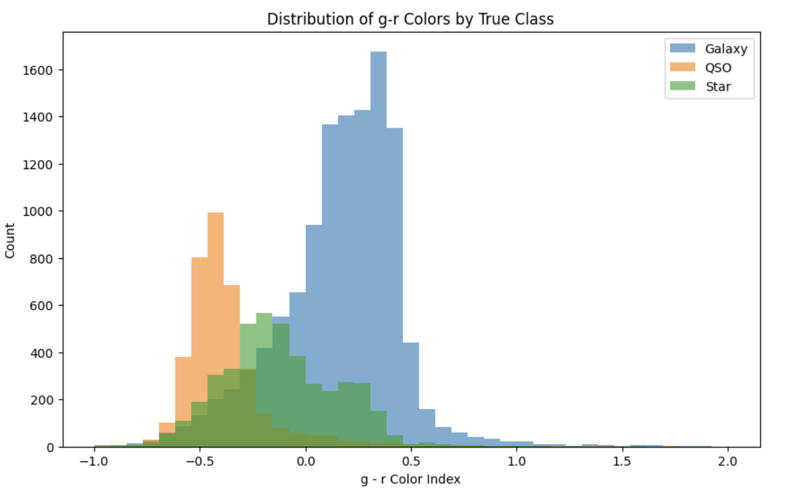

Stars, galaxies, and quasars need to be classified to analyze the structures of celestial formations. While telescope observations may be enough, datasets featuring different celestial objects can help classify them autonomously. We will classify stars, galaxies, and quasars in this project.
There are several methods to classify celestial objects currently using ML. There is a 2023 paper that compares Random Forest, XGBoost, and K-NN for classifying galaxies, quasars, and stars (Zeraatgari et al.). This paper reported high accuracy for XGBoost and ensemble learning that included Random Forest (Zeraatgari et al.). There is research that suggests that the most important groups of features for classification are photometry, colors, and morphology (von Marttens et al., 2023). Finally, deep learning methods have been used on SDSS data that showed how CNNs and photometric images can be used for classification, with a peak accuracy of 90.7% (He et al., 2021). In comparison to XGBoost and Random Forest’s accuracy of 98.93%, deep learning methods may not perform as well but offer a suitable alternative (Zeraatgari et al.).
The “Stellar Classification Dataset” is from Kaggle. The data is compiled from the Sloan Digital Sky Survey Data Release 17. There are 100,000 rows of data with 17 features/columns. The 18th column is the class, which includes the labels for the data. The labels can be GALAXY, STAR, or QSO (which is quasar).
Name: Stellar Classification Dataset
URL: Dataset URL
Over 200 probes have been sent to explore celestial bodies outside Earth’s orbit. A significant chunk of these have even been sent into interstellar space. These probes were sent to broaden our understanding of the universe, and as data started flowing in, it was important to catalogue these bodies. We are mainly focusing on stars, galaxies, and quasars. The dataset we are using compiles the characteristics used to do this early cataloguing as well as the results obtained from it.
Stellar objects such as stars, and galaxies, are observable to the naked eye. However, what we see is just a twinkle in the night sky. To truly know what the role of these objects play, it is important to classify them correctly. By leveraging data collected by probes we can use ML and statistical analysis to distinguish between bodies such as stars, galaxies, and quasars and further our understanding of the universe.
In order to perform ML analysis, we need to devise a plan for the pre-processing and ML model methods that we will employ to train the model and evaluate performance. For this we break our methods down into data preprocessing steps where we clean our dataset and ensure computations are efficient, and use ML supervised learning models to train models and validate performances through accuracies and hyperparameter tuning.
Firstly, we look at the preprocessing models that we have. One methodology we plan on employing is feature-pruning, for which we will remove any column entries that are insignificant for the training of our model, especially columns that may just be identifiers. We can use SKLearn function transformers for feature engineering, which we will do as applicable based on scientific reasoning for different data columns like the brightness features. The dataset is relatively clean, but we will use simple imputers for any missing data that we find. For large data values which might be computationally expensive, we will use some form of standardizing to ensure that the data is less expensive to work with. Also for model training, we know that the classes themselves have different numbers of entries, so we will handle class balancing as well.
Next, we look at the ML models that we will employ. For these, we use SciKitLearn’s libraries, and fine tune them based on our requirements. We will analyse the performance differences for different models, including Logistic Regression, SVMs, Random Forests, Gradient Boosting, and Multilayer Perceptron NNs.
As mentioned in our proposal, we decided to do multiple data preprocessing methods to ensure our data is ready to be used to train the model of our choosing. For this midterm checkpoint, we have implemented the following preprocessing methods:
Once we were done preprocessing the data, we could start implementing supervised learning methods on the dataset:
New model: Multilayer Perceptron (MLP)
In the midterm checkpoint we highlighted the next steps we planned on taking, however we have decided to update those planned steps. Firstly, we will be using a MLP (Multilayer Perceptron) model to further analyze our dataset using an artificial neural network. This will be done by analyzing the results using common scores that we implemented for our Random Forest and Logistic Regression models. Finally, we will also be doing photometric analysis on our models to see how they classify our data using g-r values into blue, intermediate, and red objects.
We chose to add an MLP specifically because both Logistic Regression and Random Forest showed clear limitations when modeling the nonlinear regions of the data, particularly in the mid-redshift range. This is evident in the “Accuracy based on Redshift Range” graph, where Logistic Regression drops to roughly 75% and Random Forest drops to about 88% for objects with redshift between 0.5 and 1.0. In this region, the photometric magnitudes of galaxies and quasars overlap in ways that cannot be captured by linear boundaries or by tree-based threshold splits alone. Since the mid-redshift region introduces curved, continuous, and interacting feature patterns, we incorporated an MLP to model these nonlinear relationships more effectively through its hidden layers and nonlinear activation functions.
Our primary metrics for the results is the accuracy that we get for various models, based on the model types after fine tuning. We will also look at the per-class precision, meaning that per class we’ll see what percent of objects were correctly predicted for that class. Finally, we will see the F1 score to ensure that the majority class isn’t dominating the entire models.
Project goals: we aim to find high accuracy, and identify the model that will provide this highest accuracy. We also want to account for sustainability by ensuring that we maintain computational efficiency with our models and data processing.
We expect to see high accuracies for all models, with the best performance coming from MLPs (since they handle complex features well) and Random Forests (since they work well for correlated features).
Finally, after training the two models highlighted above (Logistic Regression and Random Forest), we must discuss the results obtained from them. For each model, we looked at accuracy, precision, recall, f1 score, confusion matrix, and per class metrics to ensure we have an all-rounded, generic insight into the performance of the model:
After analyzing the generic performance of both models, we decided to use Random Forest to dive deeper into the role each feature plays for classification. Each value indicates how much each feature helped reduce uncertainty when splitting the decision trees.

From the plot above it is clear that ‘redshift’ contributes the most to reducing uncertainty. This aligns with our understanding of the universe as well as redshift gives us the object's position and velocity with respect to earth, which is an important thing to help distinguish if an object is a star, galaxy, or quasar. Other features such as the photometric magnitudes (u, g, r, i, z) also play some role but no feature comes close to the role that redshift plays.
Because of this result, we decided to further analyze the effect redshift plays in determining what a stellar object is. To do this, we first divided the data into 3 groups based on redshift values: low (<0.5), mid (>=0.5 and <1), high (>=1) and then compared the results of the models on these 3 groups.

As seen in the plot above, both models classify much more accurately with low and high redshift values with logistic regression having an accuracy of ~94% and random forest having an accuracy of ~98%. However, when it comes to mid redshift values, the classification accuracy for both models drops considerably (75% for logistic regression and 88% for random forest). This leads to the conclusion that objects with redshift values between 0.5 and 1 are harder to classify and when the model falls back to other features (like photometric magnitudes) it finds that there is overlap in these values between stars, galaxies, and quasars.
Thus, through the analyses that we have performed, it is clear that redshift plays a crucial role in classifying stellar objects. Also, from the results it is also clear that Random Forest is much better at handling complex relationships as it consistently performed better (in all metrics) over the logistic regression model.
For the last part of our project we aim to do the following:
We will expand on our results from the midterm checkpoint.
We used a MLP with two hidden layers of 100 and 50 neurons because this architecture captures the nonlinear relationships present in photometric and redshift features without overfitting. The MLPClassifier uses ReLU activation function, which introduces nonlinearity and allows the neural network to model nonlinear decision boundaries. This was something both Logistic Regression and Random Forest failed to do in the mid-redshift region. The first layer with 100 neurons learns high-level feature interactions (like how redshift interacts with color indices) and the second 50 neuron layer finds more discriminative patterns for classification. This architecture gave us a balance between classification accuracy and training stability for our dataset, as seen in MLP’s strong performance across all classes.
This MLP achieved the following results.
Overall performance:
Given that we have the same common scores for Random Forest and Logistic Regression, we can compare the three models using the graph shown below:
The chart shows that the three models all perform very strongly, with Random Forest achieving the highest precision, recall, f1-score, and accuracy overall. MLP comes second, despite our expectation that the nonlinearity would model a decision boundary better than Random Forest. Logistic regression performs the worst given that it is a linear model that cannot model the same complexity as MLP or Random Forest. Therefore, we can say that the linear decision boundary from logistic regression has been improved on with the introduction of MLP.
The confusion matrices show similar results for all 3 models, giving us information about the classes themselves. The order of classes is GALAXY, QSO, STAR. So, we see lower proportions of true positives when classifying QSO and STAR. This tells us that the redshift (most important feature) is not enough to classify these types of stellar objects. This is because the data shows that high redshift objects are often QSOs, while low redshift objects are mostly galaxies. The magnitudes help distinguish stars from galaxies but overlap significantly with quasars in the mid-redshift range. So, we now see a limitation in our results, where all three models could not distinguish effectively between QSO and STAR when relying heavily on redshift feature.
This can be seen in the chart below. There is high accuracy in classification for high and low redshift ranges for all 3 models. But in the mid-range, where QSO and STAR lie, there is a heavy drop in accuracy.

To better understand why our models struggled in the mid-redshift range and for astrophysical context, we introduced a photometric color based evaluation using the g-r color index. It is a measurement of a stellar object color based on the difference in brightness between its green (g) and red (r) light. If a stellar object has a low (g-r) index, it will be hotter and appear bluer or whiter. If it has high (g-r) index, it is cooler and appears redder.
By analyzing the test results using 3 groups (blue, intermediate, and red objects) we were able to measure how classification accuracy changes for different types of stellar objects. This analysis reveals patterns that are not visible in overall accuracy alone. All models perform strongly on intermediate (Blue-Red) objects, and the MLP shows a clear advantage on red objects (which are likely stars based on the next graph). These results demonstrate that color provides additional classification ability beyond redshift and magnitudes, and highlight how nonlinear models like the MLP benefit from photometric data. This step allowed us to explore where model performance improves or drops based on another feature, giving us a deeper understanding of classification behavior. We can see this using the graph below:
The above graph explains why these performance differences arise. The histogram of true g-r colors reveals that galaxies cluster around intermediate color values (g-r ranging from 0.0-0.5), stars span a wider range of both blue and near-red colors, and quasars occupy the bluest end of the distribution (g-r < -0.3). However, the distributions overlap significantly between stars and galaxies, and between stars and quasars in the mid-blue region. This overlap directly reflects the patterns seen in the confusion matrices for all three models, since the proportion of overlap is greater for STAR and QSO. This means the misclassifications evident in the confusion matrices for STAR and QSO can be explained by how several features are very similar for STAR and QSO, which share very similar g-r color profiles.
Overall, our results show that while all three models perform well on this dataset, Random Forest remains the strongest classifier, with MLP providing competitive performance and clear improvements over Logistic Regression. This is because MLP introduces layers with nonlinearity that help classify more complex relationships. We optimized our models very well, and investigated various features like redshift and photometric features to further investigate classifying between STAR and QSO objects. We were able to demonstrate where each model succeeds using the several graphs above. Through this expanded analysis, we achieved a more complete understanding of the dataset, the behavior of our models, and the astrophysical factors that affect classification performance.
Zeraatgari, Fatemeh Zahra, et al. “Machine Learning-Based Photometric Classification of Galaxies, Quasars, Emission-Line Galaxies, and Stars.” Monthly Notices of the Royal Astronomical Society, vol. 527, no. 3, 2023, pp. 4677–89. Oxford University Press, https://doi.org/10.1093/mnras/stad3436.
He, Z., B. Qiu, A-Li Luo, J. Shi, X. Kong, and X. Jiang. “Deep Learning Applications Based on SDSS Photometric Data: Detection and Classification of Sources.” Monthly Notices of the Royal Astronomical Society, vol. 508, no. 2, 2021, pp. 2039–52. Oxford University Press, https://doi.org/10.1093/mnras/stab2243.
Omat, D., J. Otey, and A. Al-Mousa. “Stellar Objects Classification Using Supervised Machine Learning Techniques.” 2022 International Arab Conference on Information Technology (ACIT), 2022. IEEE, https://doi.org/10.1109/acit57182.2022.9994215.
von Marttens, R., et al. “J-PLUS: Galaxy–Star–Quasar Classification for DR3.” Monthly Notices of the Royal Astronomical Society, vol. 527, no. 2, 2023, pp. 3347–65. Oxford University Press, https://doi.org/10.1093/mnras/stad3373.
| Name | Final Contributions |
|---|---|
| Ved Srivathsa | Feature Importance & Redshift Analysis, Random Forest Results, Report Writing |
| Vasanth Gogineni | Logistic Regression Results, MLP Results, Report Writing |
| Akshay Bhave | Data Preprocessing, MLP results, Report Writing |
| Lindsey Ehrlich | Potential Results and Discussion, Random Forest Results, Report Writing |
| Arnav Jha | Model Training, Report Writing, Final Presentation Slides |
| Name | Midterm Contributions |
|---|---|
| Ved Srivathsa | Feature Importance & Redshift Analysis, Report Writing |
| Vasanth Gogineni | Logistic Regression Results, Report Writing |
| Akshay Bhave | Data Preprocessing, Report Writing |
| Lindsey Ehrlich | Random Forest Results, Report Writing |
| Arnav Jha | Model Training, Report Writing |
| Name | Project Proposal Contributions |
|---|---|
| Ved Srivathsa | Methods, Video Recording, Github Page |
| Vasanth Gogineni | Introduction/Background, Video Recording, Github Page |
| Akshay Bhave | Problem Definition, Video Recording, Github Page |
| Lindsey Ehrlich | Potential Results and Discussion, Github Page |
| Arnav Jha | References, Github Page |